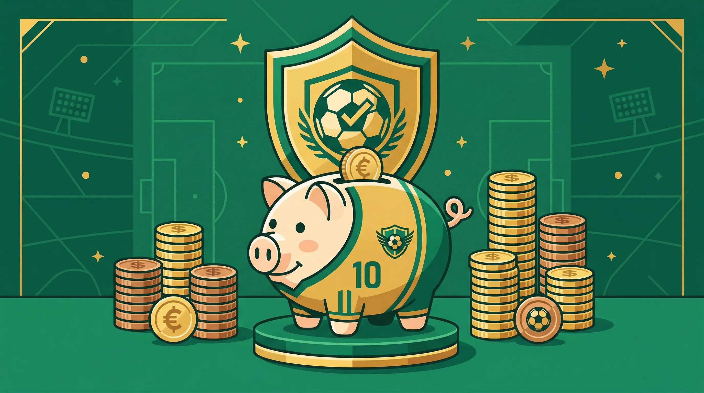

Bankroll Management for Accumulators
How to manage your betting bankroll effectively. Staking plans, risk management, and long-term thinking.
9 min read
About This Guide
How to manage your betting bankroll effectively. Staking plans, risk management, and long-term thinking.
This comprehensive guide covers everything you need to know about this aspect of football betting. Whether you are a beginner or experienced punter, you will find practical advice backed by data and analysis.
Key Takeaways
- Always research before placing bets. Data-driven decisions outperform gut feelings over time.
- Manage your bankroll carefully. Never risk more than you can afford to lose.
- Use tools and calculators to verify your assumptions before placing accumulators.
- Specialise in markets you understand well rather than spreading yourself thin.
- Take advantage of bookmaker promotions, but don't let them dictate your strategy.
Practical Application
The best way to improve your football betting is to combine knowledge with practice. Start with small stakes, track your results, and review your performance regularly. Over time, you will develop an intuition for value that complements your analytical approach.
Use our Acca Builder to practice constructing accumulators, and our calculators to verify the mathematics behind your bets.